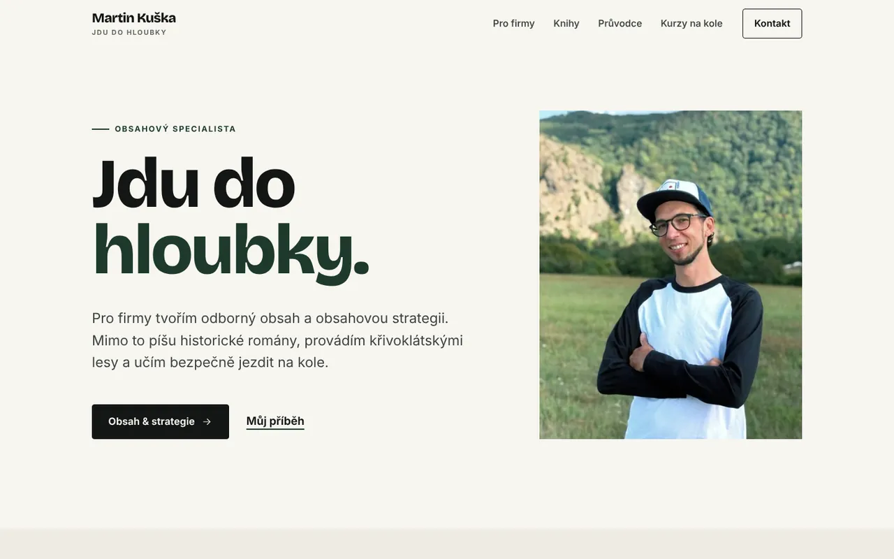
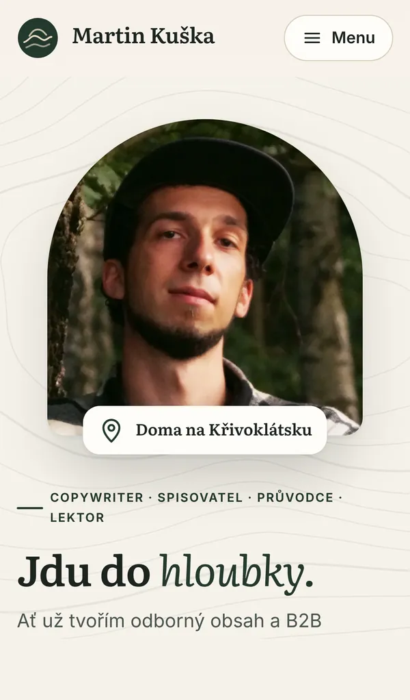
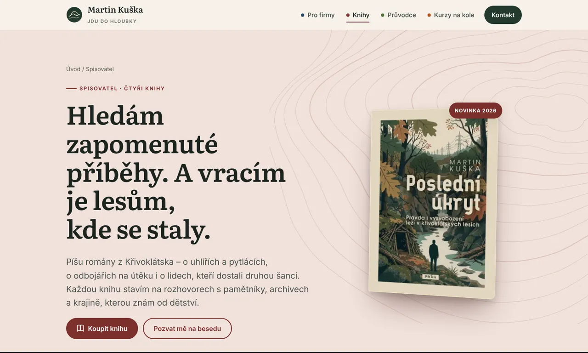

Web pro přítele · rozpracováno
Martin Kuška
Osobní web pro autora knih o Křivoklátsku, copywritera a obsahového stratéga pro firmy, průvodce a lektora kurzů jízdy na kole. Čtyři profese, jeden člověk a web, který každého návštěvníka pošle rovnou tam, kam patří.


Snímky z rozpracované verze. Grafika a styl se ještě mění.
- Lighthouse SEO, přístupnost i osvědčené postupy
- 100
- rychlost na mobilu
- 84–94
- rychlost na počítači
- 99–100
- profese, čtvery dveře
- 4
Zadání
Čtyři profese na jednom webu
-
Různí návštěvníci
Firma hledá copywritera, čtenář knihu, turista průvodce a cyklista kurz. Každý potřebuje něco jiného.
-
Dohledatelnost
Web musí najít Google i AI vyhledávače a musí jim být jasné, kdo Martin je a co nabízí.
Úvodní stránka funguje jako hlavní nádraží se čtyřmi dveřmi. Každá profese má vlastní cestu, formuláře a texty, ale celý web drží jeden styl.
Co jsem postavil a jak to pomáhá
Co web umí
-
Hlavní nádraží se čtyřmi dveřmi
Úvod rozdělí návštěvníky podle toho, co hledají: firmy, knihy, průvodcování a kurzy.
Návštěvník je na správném místě na první klik.
-
Poptávkové formuláře
Kontrola údajů a ochrana proti spamu. Klik na termín akce rovnou předvyplní formulář.
Méně psaní pro zájemce, méně spamu pro Martina.
-
Strukturovaná data
Google dostane popis osoby, knih, služeb, častých dotazů a akcí ve strojově čitelné podobě. K tomu mapa stránek.
Bohatší výsledky ve vyhledávání.
-
Připraveno pro AI vyhledávače
Soubor llms.txt vysvětlí chatovacím asistentům, kdo Martin je a co dělá.
Správné odpovědi i v AI vyhledávání.
-
Měření se souhlasem
Google Analytics 4 s režimem souhlasu v2. Měří se jen to, s čím návštěvník souhlasí.
Data pro rozhodování v souladu s pravidly.
-
Rychlost
Statický web na Astru. Lighthouse dává 100 za SEO, přístupnost i osvědčené postupy.
Web se načte hned i na horším signálu.
Technologie Astro · strukturovaná data JSON-LD · llms.txt · Google Analytics 4 s režimem souhlasu v2
Jak to vypadá
Snímky
Úvod se čtyřmi dveřmi pro čtyři profese. 
Stránka spisovatele s novou knihou. Úvod v mobilu.
Snímky z rozpracované verze webu. Grafika a styl se ještě mění, termíny, ceny a některé fotky jsou zatím jen ukázka.
Další projekty
Co jsem postavil dál
Spolupráce
Potřebujete web, který pro vás bude pracovat?
Postavím ho na míru, včetně administrace, kterou zvládnete sami. Začínám vždycky tím, co lidé opravdu hledají.
- Stav Rozpracováno
- Pro Martin Kuška, spisovatel
- Postaveno na Astro